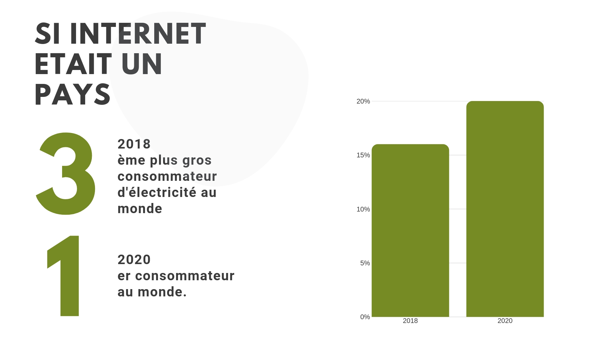

Internet :
Internet : En matière d’émissions de CO2, internet pollue 1,5 fois plus que le transport aérien. La moitié des gaz à effet de serre produits par internet provient de l’utilisateur, l’autre moitié étant divisée entre le réseau et les data centers. Cette croissance du web est telle qu’elle constitue un véritable enjeu environnemental pour les années à venir. Dans un climat de transition énergétique où l’on tend vers la fin du nucléaire, il paraît essentiel de prendre en compte la consommation exponentielle du numérique, qui risque d’être dure à alimenter avec des énergies renouvelables. L’empreinte écologique des internautes : N’oublions pas l’utilisateur, responsable de 50 % des gaz à effet de serre d’internet ! Nous étions 3,9 milliards d’internautes en 2016 (47 % de la population mondiale) et d’après Google nous dépasserons les 5 milliards en 2020 (+30%). Il est donc nécessaire de sensibiliser les internautes sur leur impact écologique et les gestes permettant de réduire leur empreinte carbone.